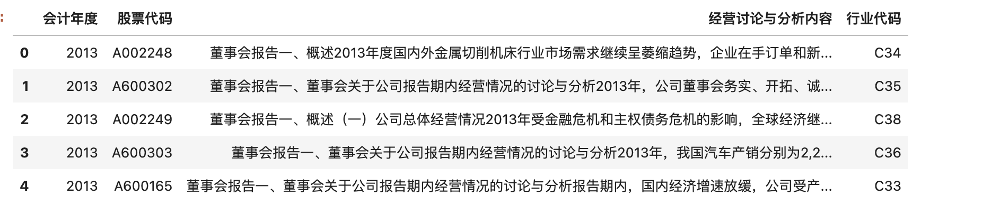
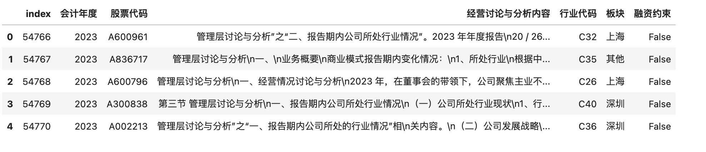
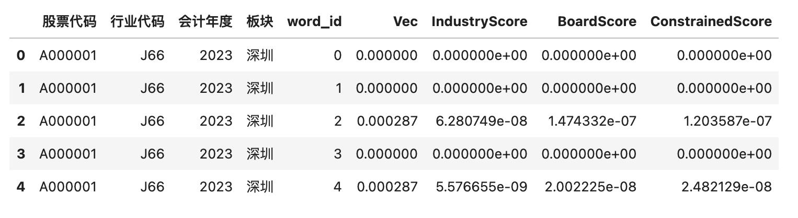
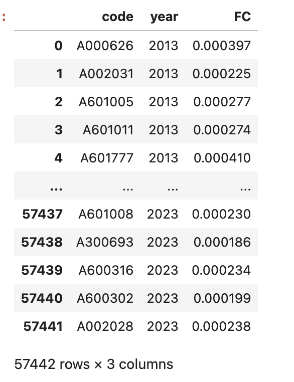

技术路线
[工作量]
1. 代码130+行
2. 调试时间 3 小时， 运行时间 20 小时
[内容]
1. 设计正则表达式， 识别企业融资约束
2. 构建企业管理层讨论与分析文本向量(标准化) Vec_it
3. 构建板块(沪、深)文本向量(标准化)BoardVec_bt
4. 构建行业文本向量(标准化) IndustryVec_it
5. 构建融资约束样本集的文本均值向量(标准化) ConstrainedVec_it
6. 基于前面几个变量，计算得到
- BoardScore_bt 、 InstryScore_it
- 得到5w多个csv文件(中间运算结果), 存储在 fin_constrain_output/{year}/{code}.csv
7. [融资约束FC指标计量建模]
- ConstrainedScore_it =β0 + β1 * BoardScore_bt + β2 * IndustryScore_it + E_it
- BoardScore_bt 交易所引发的融资约束相似度
- IndustryScore_it 行业特征引发的融资约束相似度
- E_it 残差就是本文要计算的[融资约束指标FC]
一、识别融资约束样本
在获取 MD&A 的基础上，采用正则表达式（Regular Expression） 检索出隐含融资约束信息的文本，并把相应的 MD&A 进行标记，纳入对应年度的融资约束文本集中。 其中，在检索并标记融资约束文本的过程中，本文参考 Hoberg 和 Maksimovic （2015）、Buehlmaier 和 Whited（2016）的研究方法。
Hoberg 和 Maksimovic（2015）认为，融资约束体现为投资计划、项目的推迟、搁置乃至放弃，因此，他们构造了两组“推迟投资”词语列表，一组是有推迟、延期、搁置含义的动词词表; 另一组是与投资、 项目、计划等意思相近的名词词表。 若在待识别文本中，动词词表和名词词表中的词语、词组同时出现，且相隔不超过 12 词，则将其判定为有推迟投资含义的融资约束文本。
Buehlmaier 和 Whited（2016） 在构建股权融资约束文本集的过程中，直接引用了前者的“推迟投资”词表，同时，为了确定投资的推迟确实是由股权融资方面的问题引起的，还计算了距“推迟投资”语句 12 词以内股权融资相关词语出现的频率，最终只把频率排行前 250 的观测加入股权融资约束文本集。
1.1 前人不足
需要说明的是，尽管本文采用的方法借鉴了 Hoberg 和 Maksimovic（2015）和 Buehlmaier 和 Whited （2016）的做法，但与其存在着两个方面的差异。
- 第一，本文没有通过“推迟投资”界定融资约束，而是通过公司对资金状况的描述去识别，相较而言这一做法更为直接。 例如，若公司明确表明融资能力有限，资金紧张，则被视为融资约束样本。
- 第二，我们认为，即便“推迟投资”词表中的动词和名词在相隔 12 词以内出现，两个词之间也未必有关联，12词的窗口长度容易引起大量误判。 尤其考虑到汉语使用较为灵活，不同公司在表述上也存在着较大的差异，因此，本文使用了可覆盖更多表述形式、更加灵活的正则表达式进行检索，并根据数次检索结果排除了很多容易导致误判的情形，查准率较高。
1.2 本文完善
具体地，为了在 MD&A 文本集中检索出融资约束文本，我们在设计正则表达式时将能显示公司有融资约束的各种文字表达，以词语组合的形式进行提炼。
regex1 = "[^。]*?(融资|资金|筹资)[^。]{0, 6}?(难以|不能|无法|不足以)[^。]*"
#能在 MD&A 文本中匹配出以下形式的句子：（除句 号以外的任意长度字符串）+融资/资金/筹资+（六个 字符长度以内的任意字符串）+难以/不能/无法满足/不足以+（除句号以外的任意长度字符串）；
regex2 = "[^。]*?(融资|资金|筹资)[^。]{0, 6}?(成本|压力|难度)[^。]{0, 4}?(升|增|高|大)[^。]*"
#可在句号以外的任意长度字符串）+融资/资金/筹资+（六 个字符长度以内的任意字符串）+成本/压力/难度+ （4 个字符长度以内的任意字符串）+升/高/增/大+ （除句号以外的任意长度字符串）。
仅仅考虑融资约束文本的各种可能表述是不够的，会出现大量误判，例如，机械地将“资金”之后 4 个字符以内出现“不足”的语句识别为融资约束语句，非常容易 造成误判，因为部分 MD&A 提及公司“资金管理水平不足”，而资金管理水平反映的是公司运营能力， 和融资约束无直接关系。 诸如此类的匹配应视作误判而排除，因此我们利用正则表达式灵活的语法规则，同时构造了排除性条件。 在此基础上，将这些对应着不同判断逻辑的“规则字符串”合并至同一个正则表达式中。 如果难以合并，则利用程序语言的条件判断逻辑，对正则表达式组进行组合使用。 在具体操作中，本文就使用了正则表达式组。
二、 构建中文融资约束样本识别代码
前面的样本识别都是论文原文，接下来是大邓对该论文的融资约束样本识别算法的复现。
2.1 融资约束文本的场景
这是一个相对复杂的需求，需要综合考虑多种情况， 对于每种情况，都构建一个单独的正则表达式，用于匹配对应的文本。可以使用“或”运算符， 合并为一个更大的正则表达式。
import re
#融资不足情况
regex1 = r"(?:融资|资金|筹资)[^。]{0,6}?(?:难以|不能|无法|不足以)[^。]*"
#融资成本或压力过大情况
regex2 = r"(?:融资|资金|筹资)[^。]{0,6}?(?:成本|压力|难度)[^。]{0,4}?(?:升|增|高|大)[^。]*"
#可以使用“或”运算符， 合并为一个更大的正则表达式
pattern = r"(" + regex1 + r")|(" + regex2 + r")"
#实验数据
text1 = "公司在过去几年中进行了大量的投资，导致资金短缺，难以支持公司未来的发展计划。"
text2 = "公司在过去几年中进行了大量的投资计划，资金状况良好，没有融资压力。"
#实验结果
matches1 = re.findall(pattern, text1)
print(matches1)
matches2 = re.findall(pattern, text2)
print(matches2)
Run
[('资金短缺，难以支持公司未来的发展计划', '')]
[]
在上面的例子中，pattern能识别出文本是否含有融资约束。
- text1有融资约束，所以返回带 有内容 的 matches1
- text2没有融资约束，所以返回 没有内容 的 matches2
2.2 识别中文融资约束样本的最终代码
前面的内容都是算法逐步实现的过程，现在咱们合并为一个函数代码
import re
def is_financial_constraint(text):
#正则表达式组
regex1 = r"(?:融资|资金|筹资)[^。]{0,6}?(?:难以|不能|无法|不足以)[^。]*"
regex2 = r"(?:融资|资金|筹资)[^。]{0,6}?(?:成本|压力|难度)[^。]{0,4}?(?:升|增|高|大)[^。]*"
pattern = r"(" + regex1 + r")|(" + regex2 + r")"
#带内容的结果为融资约束，为True；反之，为False
if len(re.findall(pattern, text))>=1:
return True
else:
return False
#实验数据
text1 = "公司在过去几年中进行了大量的投资，导致资金短缺，难以支持公司未来的发展计划。"
text2 = "公司在过去几年中进行了大量的投资计划，资金状况良好，没有融资压力。"
#实验结果
print('text1文本是否为融资约束: ', is_financial_constraint(text1))
print('text2文本是否为融资约束: ', is_financial_constraint(text2))
Run
text1文本是否为融资约束: True
text2文本是否为融资约束: False
三、批量识别融资约束样本
接下来对对 data/mda01-23.csv.gz 数据集所有md&a进行识别。
import pandas as pd
#读取md&a
df = pd.read_csv('data/mda01-23.csv.gz', compression='gzip')
df.columns = ['会计年度', '股票代码', '经营讨论与分析内容']
df['会计年度'] = df['会计年度'].astype(str)
#上市公司行业信息
ind_info_df = pd.read_excel('data/上市公司基本信息2000-2023.xlsx', usecols=['Symbol', 'EndDate', 'IndustryCodeC'])
ind_info_df = ind_info_df[ind_info_df.Symbol!='股票代码']
ind_info_df['会计年度'] = ind_info_df.EndDate.fillna('').apply(lambda date: date[:4])
ind_info_df.rename(columns={'Symbol': '股票代码', 'IndustryCodeC':'行业代码'}, inplace=True)
ind_info_df = ind_info_df[['股票代码', '会计年度', '行业代码']]
#合并数据
df = pd.merge(df, ind_info_df, on=['股票代码', '会计年度'], how='inner')
df.head()
Run
57545

新建板块字段， 上海证券交易所股票大多以 6、9开头， 而深圳证券交易所以0、3开头
def plate(code):
if (code[:2]=='A6') or (code[:2]=='A9'):
return '上海'
elif (code[:2]=='A0') or (code[:2]=='A3'):
return '深圳'
else:
return '其他'
df['板块'] = df['股票代码'].apply(plate)
df.head()
df['融资约束'] = df['经营讨论与分析内容'].apply(is_financial_constraint)
df.head()

#融资约束样本占比
df['融资约束'].sum()/len(df)
0.10631679555130767
注意
设计的 函数is_financial_constraint 应该要检查， 检查的目的是改良正则表达式组， 这里假装我们检查完了，没什么问题。
四、构建融资约束指标
前面的融资约束样本识别，只是识别出融资约束是否存在，信息的颗粒度比较粗糙。这篇论文使用文本相似度算法，构建了每家企业的融资约束指标。
本文同样参照 Hoberg 和 Maksimovic（2015）的研究方法，我们认为，融资约束程度相近的公司，其在“管理层讨论与分析”中的用词和表述也会趋于一致。 因此，通过采用余弦相似度的方法，能够在识别出全体样本的融资约束程度，并以连续变量的形式进行呈现。
具体实现算法步骤
-
给每个 md&a 文本转化为向量 Vec_it
-
当年所有属于融资约束样本的 Vec_it ， 求均值得到 ConstrainedVec_t
-
每家企业当年融资约束水平(程度) 由 Vec_it 与 ConstrainedVec_t 之积 , 即 ConstrainedScore_it 所体现。
-
考虑到市场板块、行业性因素对融资约束的影响，不能直接使用 ConstrainedScore_it。
- 对历年隶属于各个板块的公司 MD&A，求标准化词频向量的均值并做标准化处理，记为 BoardVectb_bt ，该向量反映了上市板 b 在 t 年的共同性信息披露内容。
- Vec_it 与对应板块 BoardVec_bt 之积，即为因 MD&A 共性内容导致的相似度， 记作 BoilerplateScore_i。
- 利用相同方法，计算出因行业特征引发的相似度，记作 IndustryScore_it 。
-
ConstrainedScore_it = β0 + β1 * BoardScore_bt + β2 * IndustryScore_it + E_it- BoardScore_bt 交易所引发的融资约束相似度
- IndustryScore_it 行业特征引发的融资约束相似度
- E_it 残差就是本文要计算的[融资约束指标FC]
4.1 计算2023年的Vec_it
计算量太大，先以2023为例写代码。
df_per_year = df[df['会计年度']=='2023']
df_per_year.reset_index(inplace=True)
df_per_year.head()

处理2023年的 「经营讨论与分析内容」字段内容，使其:
- 只保留中文内容
- 剔除停用词
- 整理为用空格间隔的字符串(类西方语言文本格式)
- 将本文转为向量后，标准化。
- 合并一些需要的字段，如***[‘股票代码’, ‘会计年度’, ‘板块’, ‘行业代码’, ‘融资约束’]***
%%time
from sklearn.feature_extraction.text import CountVectorizer
import numpy as np
import cntext as ct
import jieba
import re
#cntext1.x
#stopwords = ct.load_pkl_dict('STOPWORDS.pkl')['STOPWORDS']['chinese']
#cntext2.x
stopwords= ct.read_yaml_dict('enzh_common_StopWords.yaml')['Dictionary']['chinese']
def transform(text):
#只保留md&a中的中文内容
text = ''.join(re.findall('[\u4e00-\u9fa5]+', text))
#剔除停用词
words = [w for w in jieba.cut(text) if w not in stopwords]
#整理为用空格间隔的字符串(类西方语言文本格式)
return ' '.join(words)
df_per_year['clean_text'] = df_per_year['经营讨论与分析内容'].apply(transform)
cv = CountVectorizer(min_df=0.05, max_df=0.5)
# 生成稀疏bow矩阵
#dtm 文档-词频-矩阵
dtm_per_year = cv.fit_transform(df_per_year['clean_text'])
dtm_per_year = pd.DataFrame(dtm_per_year.toarray(), index=dtm_per_year.index)
#向量标准化normalize
dtm_per_year = dtm_per_year.apply(lambda row: row/np.sum(row), axis=1)
#合并多个字段为新的df
dtm_per_year = pd.concat([df_per_year[['股票代码', '会计年度', '板块', '行业代码', '融资约束']], dtm_per_year], axis=1)
dtm_per_year.head()
Run
CPU times: user 5.88 s, sys: 901 ms, total: 6.78 s
Wall time: 49.7 s
4.2 2023年的板块评分、行业评分
计算2023年所有公司的 板块评分BoardScore、行业评分IndustrySocre。该部分代码运行较慢，运行下来大约2小时。
%%time
import os
import pandas as pd
year = 2023
if not os.path.exists('fin_constrain_output'):
os.mkdir('fin_constrain_output')
for idx in range(len(dtm_per_year)):
code = dtm_per_year.loc[idx, '股票代码']
ind = dtm_per_year.loc[idx, '行业代码']
year = dtm_per_year.loc[idx, '会计年度']
board = dtm_per_year.loc[idx, '板块']
Vec = dtm_per_year.iloc[idx, 5:]
Ind_Vec = dtm_per_year[dtm_per_year['行业代码']==ind][dtm_per_year['股票代码']!=code].iloc[:, 5:].mean(axis=0)
Ind_Score = Vec * (Ind_Vec/np.sum(Ind_Vec))
FinConstrain_Vec = dtm_per_year[dtm_per_year['融资约束']==True].iloc[:, 5:].mean(axis=0)
FinConstrain_Score = Vec * (FinConstrain_Vec/np.sum(FinConstrain_Vec))
Board_Vec = dtm_per_year[dtm_per_year['板块']==board][dtm_per_year['股票代码']!=code].iloc[:, 5:].mean(axis=0)
Board_Score = Vec * (Board_Vec/np.sum(Board_Vec))
dtm_per_year_melted = dtm_per_year.melt(id_vars=['股票代码', '会计年度', '行业代码', '板块', '融资约束'],
var_name='word_id',
value_name='word_freq')
corporate_df = pd.DataFrame({'word_id': dtm_per_year_melted[dtm_per_year_melted['股票代码']==code]['word_id'].values,
'word_freq': dtm_per_year_melted[dtm_per_year_melted['股票代码']==code]['word_freq'].values,
'ind_freq': Ind_Score,
'board_freq': Board_Score,
'fin_constrain_freq': FinConstrain_Score})
corporate_df['股票代码'] = code
corporate_df['行业代码'] = ind
corporate_df['板块'] = board
corporate_df['会计年度'] = year
corporate_df.reset_index(inplace=True)
corporate_df = corporate_df[['股票代码', '行业代码', '会计年度', '板块', 'word_id', 'word_freq', 'ind_freq', 'board_freq', 'fin_constrain_freq']]
if not os.path.exists('fin_constrain_output/{year}'.format(year=year)):
os.mkdir('fin_constrain_output/{year}'.format(year=year))
corporate_df.to_csv('fin_constrain_output/{year}/{code}.csv'.format(year=year, code=code), index=False, mode='w')
4.3 计算所有年份板块评分、行业评分
这部分代码，全部运行下来，耗时 20 小时。
%%time
from sklearn.feature_extraction.text import CountVectorizer
import numpy as np
import pandas as pd
import re
import os
from tqdm import tqdm
import cntext as ct
import jieba
if not os.path.exists('fin_constrain_output'):
os.mkdir('fin_constrain_output')
#cntext1.x
#stopwords = ct.load_pkl_dict('STOPWORDS.pkl')['STOPWORDS']['chinese']
#cntext2.x
stopwords= ct.read_yaml_dict('enzh_common_StopWords.yaml')['Dictionary']['chinese']
def is_financial_constraint(text):
#正则表达式组
regex1 = r"(?:融资|资金|筹资)[^。]{0,6}?(?:难以|不能|无法|不足以)[^。]*"
regex2 = r"(?:融资|资金|筹资)[^。]{0,6}?(?:成本|压力|难度)[^。]{0,4}?(?:升|增|高|大)[^。]*"
pattern = r"(" + regex1 + r")|(" + regex2 + r")"
#带内容的结果为融资约束，为True；反之，为False
if len(re.findall(pattern, text))>=1:
return True
else:
return False
def transform(text):
#只保留md&a中的中文内容
text = ''.join(re.findall('[\u4e00-\u9fa5]+', text))
#剔除停用词
words = [w for w in jieba.cut(text) if w not in stopwords]
#整理为用空格间隔的字符串(类西方语言文本格式)
return ' '.join(words)
def plate(code):
#判断股票是在上海证券交易所还是深圳证券交易所
if (code[:2]=='A6') or (code[:2]=='A9'):
return '上海'
elif (code[:2]=='A0') or (code[:2]=='A3'):
return '深圳'
else:
return '其他'
#读取md&a
df = pd.read_csv('data/mda01-23.csv.gz', compression='gzip')
df.columns = ['会计年度', '股票代码', '经营讨论与分析内容']
df['会计年度'] = df['会计年度'].astype(str)
#上市公司行业信息
ind_info_df = pd.read_excel('data/上市公司基本信息2000-2023.xlsx', usecols=['Symbol', 'EndDate', 'IndustryCodeC'])
ind_info_df = ind_info_df[ind_info_df.Symbol!='股票代码']
ind_info_df['会计年度'] = ind_info_df.EndDate.fillna('').apply(lambda date: date[:4])
ind_info_df.rename(columns={'Symbol': '股票代码', 'IndustryCodeC':'行业代码'}, inplace=True)
ind_info_df = ind_info_df[['股票代码', '会计年度', '行业代码']]
#合并数据
df = pd.merge(df, ind_info_df, on=['股票代码', '会计年度'], how='inner')
df['板块'] = df['股票代码'].apply(plate)
df = df[df['板块'].isin(['上海', '深圳'])]
#识别融资约束
df['融资约束'] = df['经营讨论与分析内容'].apply(is_financial_constraint)
for year in df['会计年度'].unique():
df_per_year = df[df['会计年度']==year]
df_per_year.reset_index(inplace=True)
df_per_year['clean_text'] = df_per_year['经营讨论与分析内容'].apply(transform)
cv = CountVectorizer(min_df=0.05, max_df=0.5)
# 生成稀疏bow矩阵
#dtm 文档-词频-矩阵
dtm_per_year = cv.fit_transform(df_per_year['clean_text'])
dtm_per_year = pd.DataFrame(dtm_per_year.toarray(), index=dtm_per_year.index)
#向量标准化normalize
dtm_per_year = dtm_per_year.apply(lambda row: row/np.sum(row), axis=1)
#合并多个字段为新的df
dtm_per_year = pd.concat([df_per_year[['股票代码', '会计年度', '板块', '行业代码', '融资约束']], dtm_per_year], axis=1)
for idx in tqdm(range(len(dtm_per_year)), desc=f'{year}进度'):
code = dtm_per_year.loc[idx, '股票代码']
ind = dtm_per_year.loc[idx, '行业代码']
year = dtm_per_year.loc[idx, '会计年度']
board = dtm_per_year.loc[idx, '板块']
Vec = dtm_per_year.iloc[idx, 5:]
Ind_Vec = dtm_per_year[dtm_per_year['行业代码']==ind][dtm_per_year['股票代码']!=code].iloc[:, 5:].mean(axis=0)
Ind_Score = Vec * (Ind_Vec/np.sum(Ind_Vec))
FinConstrain_Vec = dtm_per_year[dtm_per_year['融资约束']==True].iloc[:, 5:].mean(axis=0)
FinConstrain_Score = Vec * (FinConstrain_Vec/np.sum(FinConstrain_Vec))
Board_Vec = dtm_per_year[dtm_per_year['板块']==board][dtm_per_year['股票代码']!=code].iloc[:, 5:].mean(axis=0)
Board_Score = Vec * (Board_Vec/np.sum(Board_Vec))
dtm_per_year_melted = dtm_per_year.melt(id_vars=['股票代码', '会计年度', '行业代码', '板块', '融资约束'],
var_name='word_id',
value_name='word_freq')
corporate_df = pd.DataFrame({'word_id': dtm_per_year_melted[dtm_per_year_melted['股票代码']==code]['word_id'].values,
'word_freq': dtm_per_year_melted[dtm_per_year_melted['股票代码']==code]['word_freq'].values,
'ind_freq': Ind_Score,
'board_freq': Board_Score,
'fin_constrain_freq': FinConstrain_Score})
corporate_df['股票代码'] = code
corporate_df['行业代码'] = ind
corporate_df['板块'] = board
corporate_df['会计年度'] = year
corporate_df.reset_index(inplace=True)
corporate_df = corporate_df[['股票代码', '行业代码', '会计年度', '板块', 'word_id', 'word_freq', 'ind_freq', 'board_freq', 'fin_constrain_freq']]
if not os.path.exists('fin_constrain_output/{year}'.format(year=year)):
os.mkdir('fin_constrain_output/{year}'.format(year=year))
corporate_df.to_csv('fin_constrain_output/{year}/{code}.csv'.format(year=year, code=code), index=False, mode='w')
4.4 融资约束2023
- ConstrainedScore_it =β0 + β1 * BoardScore_bt + β2 * IndustryScore_it + E_it
- BoardScore_bt 交易所引发的融资约束相似度
- IndustryScore_it 行业特征引发的融资约束相似度
- E_it 残差就是本文要计算的[融资约束指标FC]
import pandas as pd
csv_df = pd.read_csv('fin_constrain_output/2023/A000001.csv', converters={'股票代码': str})
csv_df.head()
#更改字段名。
csv_df.columns = ['股票代码', '行业代码', '会计年度', '板块', 'word_id', 'Vec', 'IndustryScore', 'BoardScore', 'ConstrainedScore']
csv_df.head()

import statsmodels.formula.api as smf
#因变量ConstrainedScore
#解释变量IndustryScore、 BoardScore
formula = 'ConstrainedScore ~ IndustryScore + BoardScore'
model = smf.ols(formula, data=csv_df)
result = model.fit()
print(result.summary())
Run
OLS Regression Results
==============================================================================
Dep. Variable: ConstrainedScore R-squared: 0.986
Model: OLS Adj. R-squared: 0.986
Method: Least Squares F-statistic: 1.612e+05
Date: Sat, 27 Jul 2024 Prob (F-statistic): 0.00
Time: 14:12:31 Log-Likelihood: 64496.
No. Observations: 4703 AIC: -1.290e+05
Df Residuals: 4700 BIC: -1.290e+05
Df Model: 2
Covariance Type: nonrobust
=================================================================================
coef std err t P>|t| [0.025 0.975]
---------------------------------------------------------------------------------
Intercept -1.534e-08 3.92e-09 -3.914 0.000 -2.3e-08 -7.65e-09
IndustryScore 0.1173 0.002 60.638 0.000 0.114 0.121
BoardScore 1.0034 0.007 139.246 0.000 0.989 1.018
==============================================================================
Omnibus: 9389.385 Durbin-Watson: 1.795
Prob(Omnibus): 0.000 Jarque-Bera (JB): 35835031.254
Skew: -15.930 Prob(JB): 0.00
Kurtosis: 429.445 Cond. No. 1.90e+06
==============================================================================
Notes:
[1] Standard Errors assume that the covariance matrix of the errors is correctly specified.
[2] The condition number is large, 1.9e+06. This might indicate that there are
strong multicollinearity or other numerical problems.
#融资约束FC
FC = sum(abs(result.resid))
print('2023年 A000001融资约束指标 FC: {}'.format(FC))
Run
2023年 A000001融资约束指标 FC: 0.00020066158329792454
4.5 融资约束2001-2023
根据步骤4.4我们成功计算出了2023的融资约束FC指标，现在推广到2001-2023， 并将计算结果存储到 fin_constrain2001-2023.csv， csv 含 code、year、FC 三个字段。
%%time
import glob
import csv
import statsmodels.formula.api as smf
import pandas as pd
with open('fin_constrain2001-2023.csv', 'w', encoding='utf-8', newline='') as csvf:
fieldnames = ['code', 'year', 'FC']
writer = csv.DictWriter(csvf, fieldnames=fieldnames)
writer.writeheader()
for file in glob.glob('fin_constrain_output/*/*.csv'):
try:
df_ = pd.read_csv(file)
df_.columns = ['股票代码', '行业代码', '会计年度', '板块', 'word_id', 'Vec', 'IndustryScore', 'BoardScore', 'ConstrainedScore']
formula = 'ConstrainedScore ~ IndustryScore + BoardScore'
model = smf.ols(formula, data=df_)
result = model.fit()
FC = sum(result.resid)
FC = sum(abs(result.resid))
data = {
'code': df_['股票代码'].unique()[0],
'year': df_['会计年度'].unique()[0],
'FC': FC
}
writer.writerow(data)
except:
pass
最后查看(欣赏)这个融资约束数据 fin_constrain2001-2023.csv
fc_df = pd.read_csv('fin_constrain2001-2023.csv')
fc_df

五、获取资料
数据&代码创作不易，如果需要源代码和数据， 加微信372335839， 备注「姓名-学校-专业」
打包200元, 含
- 管理层讨论与分析(mda01-23.csv.gz)、上市公司基本信息2000-2023.xlsx
- cntext2安装文件(cntext-2.1.3-py3-none-any.whl)
- 计算结果(fin_constrain2001-2023.csv)
零卖价
- 100元 管理层讨论与分析(mda01-23.csv.gz)、上市公司基本信息2000-2023.xlsx
- 100元 cntext2安装文件(cntext-2.1.3-py3-none-any.whl)
- 50元 计算结果(fin_constrain2001-2023.csv)